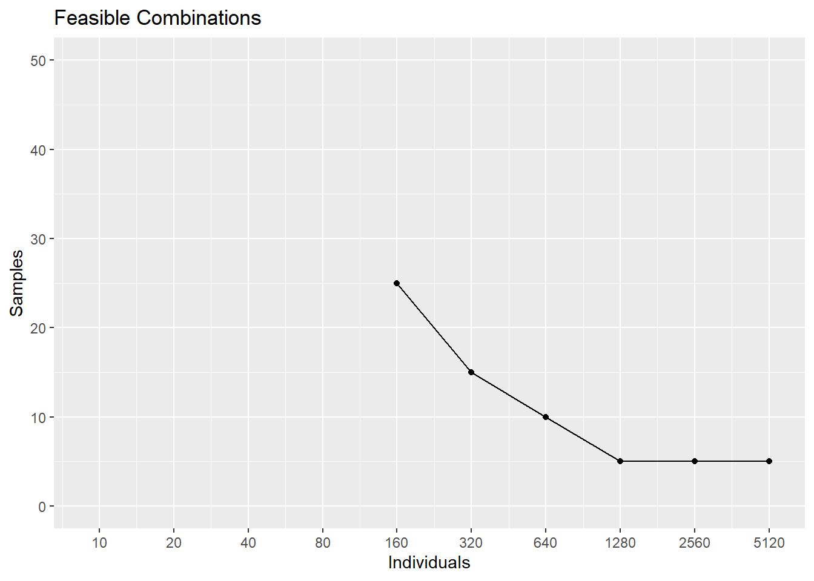

powerAD.RmdThis vignette presents the main functions included in the powerAD package. Based on the empirical power estimations and results described in Pirla, Taquet and Quoidbach (2021), powerAD provides a set of user-ready tools for those interested in running studies in the field of affect dynamics.
The vignette follows this structure:
powerAD
powerAD
As this package is mantained in a Github repository, you will need to use the function install_github() from the devtools package. To install and load powerAD, introduce the following commands in your console:
install.packages("devtools")
devtools::install_github("sergiopirla/powerAD")
library(powerAD)The main functions of powerAD are designed to guide practitioners and researchers in conducting well-powered affect dynamics studies. The main function to this end is samplingAD(). This function takes the following imputs:
Given these imputs, samplingAD() estimates the set of feasible combinations of number of individuals and affect reports per individuals needed to detect a relationship of size “r” in a given affect metric, with a specific power and alpha level.
For example, if interested in obtaining the set of feasible sampling approaches to conduct an study with 80% power, an expected effect size of r=0.3, setting an alpha of 0.05 and interested in the Teager-Kaiser Energy Operator, we would run the following code:
library(powerAD)
samplingAD(power=0.8, metric = "TKEO", r=0.3, p.value = 0.05)##
## Feasible combinations of individuals and samples per individual to obtain a power of 80 % to detect an effect of size r= 0.3 using an alpha of 0.05 when interested in the Teager-Kaiser Energy Operator (TKEO) of affect.
##
## Feasible sampling combinations:
##
## Power Individuals Samples
## 0.8080 1280 5
## 0.9744 640 10
## 0.9400 320 15
## 0.8432 160 25
##
## -----------------------Furthermore, you might be interested in visually represnting this set of feasible sampling approaches. You can use the function plot_samplingAD() to do so. Note this function has the same arguments as samplingAD():
plot_samplingAD(power=0.8, metric = "TKEO", r=0.3, p.value = 0.05)
Now that you have an idea of the feasible sampling combinations that you can use for your study, you might be interested in obtaining a statistical power estimation for a specific sampling approach. Furthermore, you might want to explore the power of different sampling approaches depending on the relative costs associated with recruiting more people or sampling those individuals for a longer period of time. In order to do so, you can use the function powerAD(). This function takes the following arguments:
In the sampling estimations of part 2, we have seen that sampling 640 individuals 10 times, yielded sufficient power given our alpha level, effect size, and metric of interest. However, such sampling approach might be too conservative as the estimated power for this sampling combination is 97% (intead of our 80% minimum required power). Using powerAD() we can try with different sampling specifications:
powerAD(individuals=400, samples = 11, metric = "TKEO", r=0.3, p.value = 0.05)##
## Power to detect an effect of size r= 0.3 using an alpha of 0.05 when interested in the Teager-Kaiser Energy Operator (TKEO) of affect.
##
## Empirical Power (closest sampling approaches):
##
## Power Individuals Samples
## 0.7932 320 10
## 0.9744 640 10
## 0.9400 320 15
## 0.9988 640 15
##
## -----------------------
## Linear aproximation of Power under the sampling approach specified ( 400 individuals and 11 observations per individual):
##
## Aprox. Power= 84.032 %As you can see above, the function outputs the points in the power estimations of Pirla, Taquet and Quoidbach (2021) that are closer to the function’s imputs. In addittion, the function uses these close points to provide a linear aproximation to the power of our sampling approach of interest. The results show that given our study setup (alpha level, effect siz of interest and metric of interest), sampling 400 individuals a total of 11 times would suffice to obtain a power of 80%.
So far, we have been concerned with power and sampling approaches, taking the other imputs as fixed. While most researchers will rely on previous literature to define an expected effect size, we provide a companion table with some effect sizes to be used as reference. To access such data on effect sizes, you just have to type effect.sizes in your R console. If you want to see the benchmark effect sizes for a specific affect dynamic measure (e.g. TKEO), you can enter the following command:
effect.sizes[, c("Outcome", "TKEO")]## Outcome TKEO
## 1 Age -0.24695305
## 2 Gender -0.08099905
## 3 Average Meaning -0.19435538
## 4 SD Meaning 0.45159116
## 5 Rel.SD Meaning 0.37263128
## 6 RMSSD Meaning 0.44826577
## 7 TKEO Meaning 0.28387417
## 8 PAC Meaning 0.38268047
## 9 AUTO Meaning -0.05753214
## 10 Average Satisfaction -0.14425015
## 11 SD Satisfaction 0.42777312
## 12 Rel.SD Satisfaction 0.32854741
## 13 RMSSD Satisfaction 0.43058491
## 14 TKEO Satisfaction 0.24140383
## 15 PAC Satisfaction 0.36371948
## 16 AUTO Satisfaction -0.06120916
## 17 Sleep 0.02261081
## 18 Alone 0.01545217
## 19 Family 0.00433623
## 20 Friends 0.09124939
## 21 Work -0.03097502
## 22 Sports -0.01705431This table presents the effect size (Pearson’s r) between the affect TKEO and demographic variables (rows 1 and 2), static and dynamic measures of meaning in life (3-9), static and dynamic measures of life satisfaction (10-16) and proportion of time spent with different groups of people or engaging in some activities (17-22).